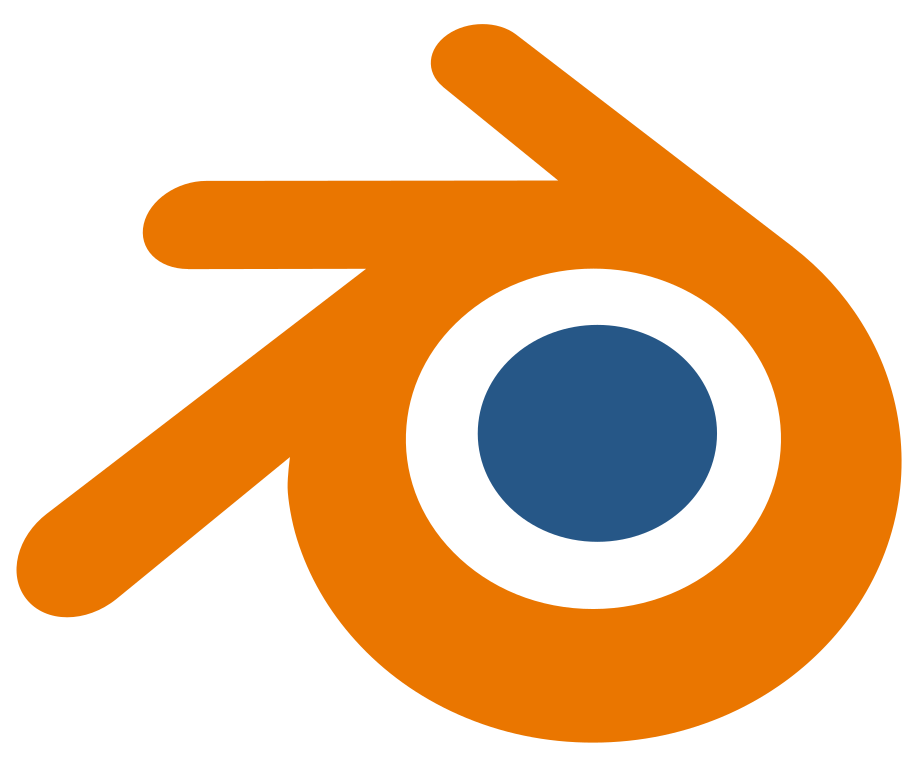
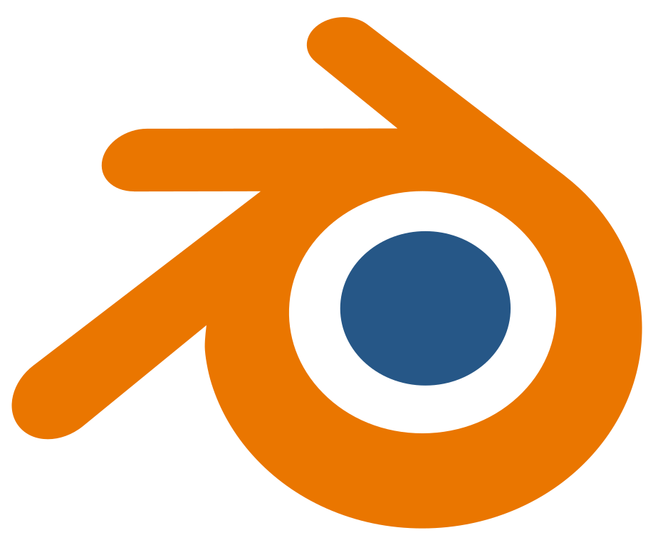

MediaTek, mmWave Chip Design Intern (2023)
MediaTek, mmWave Chip Design Intern (2023)I am an undergraduate Electrical and Electronic Engineering student at Imperial College London with a strong interest in analogue design in all frequency bands of the electromagnetic spectrum (LF, RF/microwave/mmWave, optical) and an equally strong interest in the underlying physical principles.
I like skiing as well as 3D modelling/rendering/animation, and I am learning German as well as website creation (you are currently viewing my first attempt...).
MediaTek, mmWave Chip Design Intern (2023)Layout design and electromagnetic simulations of passive components.
Schematic design and SPICE simulation of active components.
Tools:  Virtuoso with EMX
Virtuoso with EMX
 Imperial College London, Undergraduate Teaching Assistant (2022-2023)
Imperial College London, Undergraduate Teaching Assistant (2022-2023)Creation of a new calibration process for the VNA (see project VNA GUI).
Assistance during software and hardware lab sessions.
Tools:  MATLAB, Blender 3D
MATLAB, Blender 3D
Below are a few selected projects with detailed description (in links). See a chronological list of projects here.


Implementation of a calibration process for a handheld PC-based 1MHz-3GHz vector network analyser (VNA): short-open-load-thru (SOLT) cal acquisition, 12-term error model cal application, fixture de-embedding and non-ideal standards, with a student-friendly MATLAB user interface including animated instructions. More details here.
Tools: MATLAB, Blender 3D


Measurement of the complex refractive indices of acrylic glass, monocrystalline silicon and stainless steel at 650nm using an R-versus-θ method, with a review of the derivation of the Fresnel equations from Maxwell theory, their approximations and their applications in physically-based rendering in computer graphics. More details here.
Tools: MATLAB


A complex impedance meter on printed circuit board (PCB), able to measure the impedance of resistors, capacitors and inductors, as well as their combinations. More details here.
Tools: LTspice,
LTspice,  KiCad
KiCad

A 44.1kHz polyphonic multi-octave digital music synthesiser with choice of waveforms, written in C on given hardware using the STM32L432KC microcontroller. More details here
Tools:  C
C
Imperial College London, MEng Electrical and Electronic Engineering (2020-2024)Modules include: Analogue Integrated Circuits & Systems, Semiconductor Devices, Electromagnetism, Microwave Technology, Optoelectronics, Instrumentation.
 Institut International de Lancy, International Baccalaureate Diploma Programme (2018-2020)
Institut International de Lancy, International Baccalaureate Diploma Programme (2018-2020)Bilingual Diploma. HL: Mathematics, Physics, Chemistry; SL: English (Literature), French (Language & Literature), Economics.